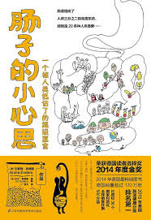

|  |
肠子的小心思：一个被人类低估了的超级器官 |
作者序
我是剖腹产临世的，也没有被母乳喂养过，这让我成为21世纪肠道科学领域最佳的研究对象。要是当初我对肠道了解得更多些的话，估计我之后得的病自己都能预估出大半来。
最早我患有乳糖不耐症，可是5岁之后就突然神奇地好了。之后我的体重一直莫名其妙地上下波动。后来总算一切正常了一段时间，就在我以为日子从此太平了的时候，大麻烦来了。
我17岁那年，右腿上突然毫无征兆地出现了一个小伤口，一直都愈合不了。拖了一个月我终于去看了医生，可是医生也无法确诊，就随便给我开了点药膏。三个星期后，伤口不但没有愈合，反而扩散到整条右腿。不久我的两条腿、胳膊还有后背全都烂光了，有时甚至脸上也是。幸好那是个冬天，我可以把自己裹得严严实实的，大家都以为我是疱疹烂到了脸上还留了疤。
所有的医生都没法解释我得的到底是什么病：“也许、可能、大概是某种神经性皮炎。”最常见的推断，要么是因为压力太大，要么就是因为心情不好。也就“可的松”（肾上腺皮质激素类药物）还算有点效果，但只要一停用，一切又都回到了老样子。就这样整整一年，不论春夏秋冬我都在裤子里紧紧裹一层连裤袜，只有这样伤口的脓水才不会渗出来弄脏裤子。终于有一天我忍无可忍，决定开始自己着手研究这个问题。一次偶然的机会我读到一篇报道，说的是一名男子在服用抗生素之后得了与我极其相似的皮肤病。凑巧的是，我在伤口第一次出现之前的数周里也服用过抗生素！
从这一刻起，我发觉我得的应该不是单纯的皮肤病，而是由肠道疾病引发的皮肤问题。我开始把自己当成肠道病人来对待，远离所有奶制品，几乎不碰任何含麦胶（Gluten）的食物，服用各种各样的益生菌，尽量把自己的饮食结构调整得更健康。那段时间里，我把自己当成小白鼠做了若干大胆的试验—— 现在回想起来，如果我那时候就懂医学，估计里面有一半的试验借我个胆我也不敢做。比如有一次，我连续几个星期服用了过量的锌，之后几个月我的嗅觉比狗还灵敏。
左思右想了整整一周，我把我的猜测悄悄说给了一个闺密听。几个月后，闺密得了很严重的胃肠感冒，饱受折磨。当我们再见面时她告诉我，她觉得我的猜想确有几分道理，这次胃肠感冒让她心力交瘁，无论肉体上还是精神上，她都很久没有这么痛苦过了。闺密的支持让我更加有了研究动力，由此踏入了一个冷门的研究领域——肠道和大脑的关系。
近年来这个研究领域发展迅猛。就在10年前，这个领域能找到的科学发表物还屈指可数，而现如今，已经有数以百计的科学文献如雨后春笋般涌现。肠道究竟如何影响着人类健康，这已然成为我们这个时代的新的研究方向！著名的美国生物化学家罗布·内特（Rob Knight）在《自然》（Nature）杂志中曾提到：这一领域的研究堪比干细胞的研究，甚至前景更好。
确实，通常情况下，严谨的科学态度要远远胜于草率定论，但是，有时候过于小心翼翼也会让我们错失良机。比如，科学界公认，有消化问题的病人往往伴有肠道神经紊乱。肠道会向大脑的某个区域发出信号，而该区域主要负责处理接收身体不适的信息。这时候病人会感到很不舒服，却对不适的原因一无所知。如果医生把它当成主观的心理问题来治疗，效果只会适得其反。类似的例子不胜枚举，但都在告诉我们，有些科学研究还是应该尽早普及！
Part 1 迷人的肠子
所有的器官组成一支训练有素的队伍，完美配合、高效运作。而运作这样一支强大的队伍，一个成年人每小时所需要的能量仅和一只100瓦的电灯泡一样多。
肺的结构设定是超节能型的，只有吸气的时候耗能，呼气则是全自动的。如果身体是透明的，你就能看到肺有多奇特多漂亮，它就像个设计精密的发条机器，却又如此柔软、安静。
简单地说，我们差不多是由三根“管带”衍生而来。第一根管带贯穿我们全身并在中间打了个结，这个是血管系统，中间的结就是所有血液汇集的地方——心脏。第二根管带几乎与脊背平行，这是脊髓中的神经系统，从这里衍生出遍布全身的大小神经。管带的一头向上生长膨大，在身体的顶端形成了一个复杂的神经囊，最后成为大脑。第三根管带由上而下、纵向贯穿整个身体，这是原始肠管（简称原肠）。
原肠负责构建身体的内部结构。它向左向右隆起两个细胞团，它们将长成我们的两片肺。原肠往下面的一小段则向外翻转形成我们的肝，同时也将形成胆囊和胰腺。至此，原肠的宏伟工程才刚刚步入正轨。它开始投身于复杂的消化系统建设工程，先建了根灵活矫健的食管，又建了个可以储藏食物数小时的胃囊，最终原肠完成了它最伟大的作品：以它命名的肠子！
排便便的奥秘
就先从肠子的出口——肛门说起，这里就用上了一套精妙的肌肉闭合机制。你能有意识地收缩和放松的那部分，叫外括约肌，是不是已经感觉到了？肛门向里的几厘米处有一块功能相似的肌肉，叫内括约肌，但这块肌肉我们是无法自主控制的。
这两块括约肌各事其主，分别效命于两大神经系统。外括约肌服务于较为高级的主观意识，如果大脑认为现在还不是上厕所的时候，外括约肌就会忠实地听从指挥，尽力缩紧，严防死守。内括约肌则隶属于不受主观意识控制的体内世界，它才不在乎你身处何方，想不想留下仙气，只要是对身体有益处的事，它就坚决执行。要是全听它的，估计到处都屁声阵阵、仙气飘飘了。
所幸两块括约肌配合紧密，让我们避免了“大便无法自理”的尴尬。当便便到达内括约肌时，它会反射性地张开。但是它可不会一下就大开绿灯，不给外括约肌一点准备时间，它会先试探性地放出一支小分队去侦查一下情况。在两块括约肌之间布满了传感细胞，它们会先分析一下小分队的性质，比如是固态的还是气态的，再将信息上传至大脑。这时大脑会收到信号：“军情紧急”或者“没什么，就是个幌子”。同时，大脑会借助耳朵、眼睛传来的信息，并综合以往的经验对外界环境做出评估，并制定相应措施。数秒内，大脑便做出初步决策，并把它下达给外括约肌：“我观察过了，你现在可是在阿姨的客厅里，最多只能让气体部分悄悄通行，固体部分要守住！”
经常憋着不去厕所，内括约肌就会越来越倦怠，甚至可能180度大转性。当外扩约肌过于经常地约束内括约肌及其周围的肌肉，就会严重打击到它们的积极性。如果内、外括约肌沟通变得越来越困难，你离便秘就不远了。
对于孕妇来说，即便没有故意忍着不上厕所，也可能出现产后便秘。这是因为，负责在内、外括约肌之间传递信息的神经纤维极为纤细，分娩时它们很容易断裂。好在人类的神经可以自行生长愈合，不管是分娩还是其他原因导致的损伤，都可以用一种生物反馈疗法来医治，这种疗法可以帮助被隔断的内、外括约肌重新架起传递信息的桥梁。
你坐在马桶上的姿势很可能不正确
实验结果非常明朗：蹲坑式平均耗时50秒，而且实验对象一致认为便便过程很舒爽。相比之下，坐便式如厕平均耗时130秒，而且似乎还有些意犹未尽。（插嘴一句，想象一下坐在一个迷你马桶上，真是可爱屎了！）
为什么会出现这样的结果呢？因为我们的肠道闭合机制不是为坐着上厕所设计的，在坐姿状态下它没法完全打开出舱口。不管站着还是坐着的时候，肠道外围都有一块肌肉像套索一样包裹着它、向一个方向牵引着它，这就产生了一道弯曲的折痕。这种类似于弯曲扣锁的机关可以为肛门括约肌减轻不少负担。你可以把它想象成花园里浇水用的橡胶管。浇水的时候突然不出水了，多半是管道的哪个地方打了个结，只要把打结的地方撸直，过不了多久水管就又通了。
还是说回肠子里的弯弯绕吧。在肛门附近，从降结肠（倒数第二节大肠）到直肠（最后一节大肠）拐了个大弯，这有什么用呢？这是为了让粪便在拐弯处顿一顿，就像在高速公路的出口处不得不刹车放慢速度一样。再加上刚才说的肌肉套索，这样不管站着或坐着，肛门括约肌都可以不太费力地就将粪便憋住。一旦包裹大肠的肌肉放松，折弯就消失了，路障解除，随之而来的就是一泻千里。
痔疮和肠道内憩室这样的肠道疾病，还有便秘，似乎只集中爆发于那些习惯用坐便器的国家。肌肉组织松弛并非罪魁祸首，原因另有所在，尤其是对于年轻人来说，很多人发病的原因是肠道受到的压力过大。有些人在压力大、精神紧张的情况下就会绷紧腹肌，有时绷了整整一天自己还对此毫不察觉，痔疮自然不愿意待在压力过大的地方，还是溜到身体外面轻松自在。同理，肠子内部的组织如果不堪压力也只好向外边跑，于是肠壁上冒出一个个灯泡状的外翻小瘤子，就形成了肠内憩室。
通往消化道的入口也很神奇
唾液腺：抗菌、镇痛、助消化的全才
现在就用你的舌头去感受一下第一个神秘之处吧。它们是四个小凸点，其中两个分布在我们腮帮子内侧靠中间的位置，正对着上颌第二磨牙。你找到左右两边腮帮子里隆起的这两个小点了吗？许多人都误以为，这两个凸点是不知道什么时候被咬到肿起来的。其实不然，这两个略微鼓起的小凸点每个人都有，而且长在同一个位置。另外两个小凸点位于舌头下面的舌根处，在舌系带的两侧，左右各一个。可别小看了这四个小凸点，它们是唾液腺导管在口腔开口处形成的黏膜乳头，我们的唾液就源自于此。
腮帮子内侧的黏膜乳头只有在特定情况下才会分泌唾液，比如吃饭的时候；而舌头下面的黏膜乳头则会全天无间隙地分泌唾液。如果钻进舌头底下的黏膜乳头、顺着唾液导管逆流而上，就能追踪到唾液腺里的大佬了。大部分的唾液都由这里生产，每天可产0.7~1升。从喉咙沿着下颌方向往上走，那里有两块圆圆的隆起，请允许我介绍一下，这就是产量惊人的唾液腺大佬。
由于正对着源源不断分泌唾液的舌下腺开口处，下门牙的里侧很容易形成牙结石。唾液中的含钙物质可以帮助加固牙釉质，可是作为牙齿，长期不断地接受四面八方唾液的礼遇，还是有些招架不住的。不仅是牙齿上，那些在牙缝和口腔晃荡着的无辜小颗粒也顺带着被钙化，成了牙结石。牙结石本身也不是什么大问题，关键是相较于我们自身光滑的牙釉质而言，它的表面实在太粗糙了，很容易沦为引起牙周病或龋齿的病源微生物的寄居之地。
可是我们唾液里怎么会有含钙的物质呢？这是因为，唾液其实是被过滤了的血液，血液经由唾液腺过滤形成唾液。唾液腺负责把红血球筛选、拦截在血管里，我们的口腔可不需要血盆大口。相反地，钙、激素或者免疫系统的抗体则会顺利通过唾液腺的筛选被保留在唾液中。正因为如此，人与人的唾液成分会有所差异，医生甚至可以通过对唾液样本的检测来诊断某些免疫性疾病或者某些特定的激素。当然唾液腺除了筛滤功能，还会往唾液里添加一些额外的物质，比如之前说过的含钙物质，甚至有镇痛功能的物质。
我们的唾液中存在着一种比吗啡还强效的镇痛成分，这种物质一直到2006年才被发现，并被命名为“唾液镇痛剂”（Opiorphin）。当然了，该成分在唾液中的含量是微乎其微的，不然的话我们估计每天都会处于“嗨了”的状态。但即使只是微量，它也帮了大忙，因为我们的口腔其实是特别敏感的娇小姐！这里是全身上下神经末梢最集中的地方，即便卡了一粒最小的草莓籽都会引起不适，更别说饭里掺着的沙子，每一颗都不会被放过。同样的小伤口，在手肘上我们可能都不会有所察觉，可要是换到嘴里，立马疼得撕心裂肺，以为是腮帮子被戳得裂了大洞。
而且，这还是在有镇痛剂的情况下呢！要是唾液里没有这种镇痛成分，那痛感简直无法想象。我们在咀嚼食物的过程中，唾液腺会分泌出大量的口水，也就夹带着释放出额外量的镇痛物质，所以通常喉咙疼的时候，吃完饭会觉得好很多，或者吃完饭后口腔里的小伤口也没那么疼了。当然了，不一定非要是吃饭，嚼嚼口香糖，我们的口腔也能自发分泌这种镇痛剂。
不仅如此，最近一些新的研究表明，这种唾液镇痛剂甚至还具有抗抑郁的作用。有些人心情差的时候喜欢暴饮暴食，这是否恰是潜意识急需大量唾液镇痛剂的外在表现呢？我想，也许几年后，镇痛及抗抑郁领域的医学研究就能给这个问题一个合理的解释了。
唾液不仅能帮助口腔娇小姐免受疼痛的折磨，还能帮助它抵御各种有害细菌的入侵。其中一位超级英雄叫作黏液素。黏液素，顾名思义，就是黏液状的分泌物。如果你用口水吹过泡泡的话，那你对它一定不陌生。黏液素从唾液腺出口喷射而出，像一张大网一样包裹住我们的牙齿和牙龈，颇有蜘蛛侠射出蜘蛛网的风范。如此一来，有害细菌在攻击到牙齿和牙龈之前，就会被这张网困住，动弹不得，随后被唾液中的抗菌成分一举消灭。
跟唾液镇痛剂一样，唾液中抗菌成分的浓度也不高，唾沫无法对口腔实现彻底的消毒。当然，也没有这个必要，人类和细菌的关系不是势不两立的，我们还要考虑口腔里的“常住居民”，不能把它们都赶尽杀绝了。这些常住居民是一些无害的口腔细菌，只要有它们占着位置，那些真正有害的细菌就无法在口腔里找到容身之所了。
睡觉时我们几乎不会分泌唾液，对睡觉会流哈喇子的人来说，这绝对是个值得欣慰的好消息。假设在夜里我们也和白天一样分泌1~1.5升的唾液，睡觉流哈喇子该是个多么痛苦的习惯啊。但也正因为我们夜里几乎不会分泌什么唾液，所以很多人早上醒来会口臭或者觉得嗓子疼。一整夜近八个小时没有唾液冲洗，对于口腔里的微生物来说只意味着一件事——彻夜狂欢。有害细菌终于可以冲出牢笼肆意妄为了，而口腔和喉咙处的黏膜却没有唾液灭火队来救援。
所以，睡觉前、起床后刷牙是个好习惯。睡前刷牙可以大大减少口腔内的细菌数目，当我们熟睡时，活跃在嘴巴里的细菌就只剩残兵败将了；而清晨醒来刷牙则可以帮助我们清扫掉“一夜狂欢”后的混乱。幸好我们的唾液腺是只勤劳的小蜜蜂，只要我们一醒来它也会立刻醒来开工。再爱赖床的唾液腺，只要我们开始刷牙或者咬第一口早餐，也会汩汩分泌唾液、开始兢兢业业地打扫卫生，要么奋勇抗敌要么干脆直接把细菌冲进胃里。之后的事就都交给胃酸来搞定了。
扁桃体：对我好点就不摘掉你
舌根处风景独好，这里布满了连绵起伏的粉红色小丘壑。如果你的喉咙不是那么敏感、一碰就吐的话，你可以小心地把手指伸到舌头的最深处，那里能摸到舌黏膜下有许多向上隆起的小结节。这些小结节的任务是负责检查所有我们吞下去的东西。无论是吃的、喝的还是吸入的空气，它们会连最细小的颗粒都挑出来抓回自己的领地细细审查，而在那里，有一支由免疫细胞组成的精锐部队正时刻准备着。像是苹果香蕉这类的老熟人可以很快通过安检，但是那些会引起咽痛的病原体可绝对不会被放过。说了这么半天，你找到那支隐秘部队了吗？如果你在舌根后面摸了半天也没对上哪儿是哪儿，没关系，因为这一大圈都属于同一个组织——免疫组织，它是我们全身上下有名的好奇宝宝。
准确地说，整个咽喉这一圈都有被免疫组织覆盖，医学术语把这个地带叫作“瓦尔代尔氏扁桃体环”（Waldeyer's tonsillar ring）——咽淋巴环。咽淋巴环里又有几个大的探测热点：最下面是舌扁桃体，就是之前提到的舌根处的小丘壑；左右两侧是腭扁桃体，就是我们通常说的扁桃体；上侧还有咽扁桃体，临近鼻子和耳朵（小孩子患扁桃体炎的时候经常会这里肿很大）。如果你以前做过扁桃体切除手术，于是觉得自己不再有扁桃体了，这个想法可是大错特错哦，至少从医学上来说是不成立的。就像刚才所说的，舌扁桃体、腭扁桃体、咽扁桃体——整个咽淋巴环都属于扁桃体，而它们的职责也全都一样：发现入侵异物、训练免疫细胞。
如果不是万不得已，扁桃体还是不要轻易摘除的好。在舌根后的丘壑地貌中，扁桃体的结构其实不是“丘”而是“壑”：扁桃体的黏膜上皮向扁桃体内部陷入形成隐窝，就像是形成了一道道沟壑一样。这种结构的意义在于最大限度扩大表皮面积，便于部署最多的部队。在这些沟壑里藏着脱落的上皮细胞、淋巴细胞及细菌等，有时候里面藏污纳垢太多又一时半会儿去除不掉的话就会导致扁桃体发炎。这也是扁桃体过于好奇勤劳的副作用。
现在说回到口臭的问题，如果你已经清洁了舌头和牙齿，却还是有口臭，那你不妨检查下扁桃体，如果它还没被切掉的话。因为这里有时候会藏着一些臭不可闻的白色小结石哦！很多人都不知道还有这个玄机，无论怎么刷牙、漱口或者刷舌头，整整几个星期该怎么臭还是怎么臭。其实不去弄它，这些小结石过段时间也会自己乖乖跑出来的，那时一切就又都会恢复正常了。要是你想变被动为主动的话，也可以用手把它们挤出来，口臭一秒之内就消失，当然这需要点小技巧。
首先，要确定口臭是否真的来自这里。最好的办法就是用手指或棉签在自己的扁桃体上擦拭一下，如果取出来闻着有臭味，那你就可以开始“寻宝”游戏了。去耳鼻喉科医生那里是比较舒适安全的选择。但是如果你更喜欢DIY的话，网上有大把的专业视频展示五花八门的按压除石技术，运气“好”的话还能看到一些极端案例。胆小者慎入哦。
对于患有牛皮癣（俗称银屑病）的人来说就是如此。因为自身的免疫系统过于紧张敏感，患者饱受皮肤瘙痒和皮肤炎症（往往从头部开始）或者关节疼痛的折磨。另外患牛皮癣的人比一般人更容易嗓子痛。一个可能的原因就是那些细菌长期藏身于扁桃体中，连续不间断地挑战免疫系统。30多年来，很多病例有案可查：一旦割除扁桃体，病人的皮肤病随之大大好转，有的甚至能自然痊愈。2012年的时候，有队来自冰岛和美国的研究人员决定好好研究一下扁桃体和牛皮癣的关系：他们把29位患有牛皮癣并伴有嗓子痛的病人分成两组，一组人割除扁桃体而另一组保留。共有15位患者割除了扁桃体，其中有13人病情明显好转，之后也没有再恶化，而没有割除扁桃体的那一组病情则毫无起色。同理，最近患有风湿类疾病的病人也越来越多地尝试割除扁桃体疗法，当然，前提条件是已经有足够多的证据表明这是扁桃体惹的祸。
肠胃系统越靠近越美丽
总之看外表的话，整个肠道系统惨不忍睹，简直就是一条既不对称又不精致，还毫无形状可言的软管子。
“鼓鼓囊囊”的食道
看看食道的路线图，你不觉得这家伙也太没方向感了吗？明明最直接的路径是径直插进胃的顶端，可它非要绕到胃的右侧从那儿接上。非也！人家这么做可是为了曲线救国。这个食道和胃的连接处被外科大夫称为贲门。尽管绕了一点弯路，但这完全是值得的，因为我们走路迈每一步时都会自动绷紧腹部肌肉，这时腹部的压力差不多是平时的两倍。当我们大笑或者咳嗽时，腹部的压力甚至会增加到四倍。这个压力会由下往上传给胃。假设食道正正地接在胃上方，那就出大事了，饭后百步走，每一步都会把刚才吃下去的给挤上来。多亏了贲门的侧面设计和胃囊巧妙的倾斜角度，自腹部上来的压力得以被分散掉很多，最后落在食管上的压力只有很小一部分。所以你大可放心，即使你笑得再放肆，也最多就是笑出个屁来，笑到吐还闻所未闻。
贲门的侧面设计虽然好处多多，但也有一个副作用——胃气泡。在所有X光片里你都能看到胃的上方有个小气泡，那就是它啦。气体的密度小，经过一段时间后都会飘到胃的顶部，而这里离侧面的出口（贲门）还有一段距离。这就是为什么很多人打嗝前会下意识地张嘴“喝下”一口气，因为吸气时吞咽的动作可以让食道的接口处接近气泡，只要一有机会，气泡就可以顺着食道“嗝”的一声奔向自由啦。如果是躺着打嗝的话，向左侧躺打嗝会容易很多。要是你习惯向右侧躺，那胃胀气的时候麻烦你放弃这个习惯，换个方向睡会让你舒服很多。
了解了食道的功能和构造后，是不是觉得它鼓鼓囊囊的外形顺眼多了？让我们再走近看一下，食道整体上是被几根肌肉纤维螺旋式包裹住的，这也是它能一鼓一鼓、波浪式蠕动的原因。如果把食道纵向拉伸，它不会被撕裂，而是会像电话线圈那样螺旋式伸展开。食道紧贴脊椎的腹侧，当你挺身仰头的时候，食道也会被纵向拉长，这时候食道变窄，上下闭合得更紧。所以，饱餐一顿后，挺起背坐直可以更有效地预防胃酸倒流。
斜挂着的胃囊
胃的位置比我们想象中要高很多。它差不多始于左边乳头的下方，终止于右肋弓的下方。如果你的胃痛低于这个倾斜的区域，那应该就不是胃痛了，很可能是肠子痛。胃的上方是心脏和肺，所以吃得太饱后，深呼吸这个动作的难度系数会一下加大很多。
在诊断的时候，医生经常会忽略Roemheld综合征，也称胃心综合征。简单来说，这个综合征就是指胃里聚集了过多的空气，以至于从下往上压迫心脏以及其他内脏神经。患者的主诉各不相同：有的感觉晕眩，有的感到恐慌、呼吸困难，更有甚者会感觉胸部剧痛，犹如急性心肌梗死发作一般。医生经常会误认为这些症状都是患者的臆想，明明检查不出任何明显的身体异常，却老是无病呻吟。其实如果医生问问患者有没有尝试过打嗝或者放屁，也许可以更有效地找到病因。通过打嗝和放屁释放掉体内的空气，可以有立竿见影的效果，但是为了长久的疗效，还是应该从预防胃肠道胀气入手。
患者们可以尝试下放弃容易引起胀气的食物，调养修复肠胃菌群，尽量少喝或者不喝酒。在酒精的作用下，产生气体的细菌能以千倍的速度繁殖，有些细菌还直接把酒精当作它们的食物（比如能让水果发酵产生酒味的细菌）。如果这些细菌在肠道里太繁荣昌盛的话，在它们一夜辛勤劳作后，每天早上迎接你的都将是一场壮观的交响乐协奏曲表演。这么一想，是谁说“酒精杀菌”来着？
现在我们再折回来说说胃囊奇特的形状吧。胃一侧短一侧长，整体看是个弯曲倾斜的囊状，这一奇特形状使胃的内里产生很多皱褶。虽然，在消化器官里胃的颜值低了些，驼背弯腰还满脸皱纹，但是人家丑有丑的道理。当我们吃饭的时候，喝下的液体流出食道后可以顺着胃右边较短的一侧直接抵达小肠的入口，固体的食物吞下后则会被扔给胃较长的一侧。胃就是通过这样的分工来有效工作的，可以直接进入下一环节的走一边，需要进一步消化分解的走另一边。所以胃可不是随随便便长歪的，它这样做是为了能够同时容纳两位消化专家，一位擅长对付液体，另一位更精通于对付固体。两位专家合二为一就成了我们的胃。
蜿蜒曲折的小肠
每根小肠绒毛里都包含了一根很小的毛细血管，用来负责运送吸收了的营养分子。所有的毛细血管会汇总起来，把吸收的养分输往肝脏接受质量审核。一旦发现有毒有害物质，肝脏会把它就地消灭，防止它混迹在大部队中进入血液循环系统。如果吃得太多，肝脏还能帮我们把过剩的养分储存下来，这里是人体的第一个能量仓库。
除了刚才说的胃、小肠，我们的肺也一样——“吸气”对它而言就意味着“吸取气态的营养”。事实上，我们的体重有相当一部分来自通过呼吸吸收的原子，而并非吃下的饭菜。而对于植物来说，绝大部分的重量甚至就是来自空气，而非土壤……我在这里默默地祈祷一下，可千万别有哪本女性杂志脑洞大开，把这段断章取义为新的减肥方法……
我认识的一位教授却持有不同观点：“要是每次吃完饭，本来供给大脑的血液真的都流到了肚子里，那我们不是都得因缺血过度晕死过去吗？”确实，饭后疲倦也许还有其他原因：我们的身体会在饱餐后释放出一种化学信息素（同种个体之间可以相互作用的化学物质），它可以刺激大脑某一特定区域，从而让我们觉得疲劳。
疲劳感会干扰我们的大脑，让我们没法专心工作，但对于小肠来说这却是件大好事。要知道，只有身体处在放松状态的时候，小肠才能最高效地工作，因为此时它可以指挥、动用体内大部分的能量，而且血液里也不会充满“压力荷尔蒙”。所以从消化的角度来看，吃完饭可以偷得片刻清闲的小职员，可要比压力山大、精神紧绷的高级经理成功得多。
多余的盲肠和肥嘟嘟的大肠
当盲肠发炎时，用手按肚脐右下侧会很疼，如果同时按肚脐左侧，疼痛感就会减轻很多；可是一旦将左侧的手挪开，“妈呀！”疼痛感就又回来了。这个灵异现象其实是因为腹腔的器官都是被一层保护液包裹着的：当我们挤压肚脐左侧的时候，保护液就会被挤到右侧，这对于发炎的盲肠来说，就像周围多垫了几个水枕，当然感觉舒服多了。除此之外，还有一个方法可以检测盲肠炎，那就是在有阻力的情况下用力抬高右腿（最好有人帮着把腿往下按，施加一个阻力）。如果觉得腹部疼痛，另外又恶心、无食欲，那十有八九就是患了盲肠炎。
盲肠经常会被误以为是多余的器官。可是你去打听一下就会知道，全世界没有任何一个医生在做盲肠炎手术的时候真的会把盲肠切掉。盲肠是大肠非常重要的一部分，而盲肠炎手术切掉的部分其实是拖挂在盲肠末端的阑尾。阑尾看上去就不像是一段正儿八经的肠子，倒是更像个瘪了的气球，也难怪大家会记不住它的名字，而用它家“主人”的名字盲肠来代替它。打个比方，这就和有人说“我住在法兰克福”，其实他是住在法兰克福旁边的一个小镇是一样的道理。所以大家通常说的盲肠炎其实应该叫阑尾炎才对。
大肠的肠壁上面聚集了大片的免疫细胞。跟大肠不一样的是，阑尾本身就是个免疫器官。阑尾占据的地形还是很不错的：一方面离其他小伙伴够远，不用管咀嚼消化等一摊子事；另一方面离核心吸收系统又不算太远，还是能够好好检查外来细菌的。只要有害病菌敢从这里路过，阑尾就会整个儿将它包围起来，但是这同时也意味着，阑尾发起炎来，也是360度无死角地发炎。尤其是如果阑尾发炎肿胀起来，被它包围起来的病菌就更难被清扫除掉了，把它切下来和病菌一起扔掉还容易一些——这就是为什么每年都有成千上万的人被送去切掉“盲肠”了。
当然不是每个阑尾都会发炎。如果阑尾正常工作的话，危险的病菌应该都会被消灭掉，只有那些好的细菌才会存活下来。换句话说，健康的阑尾里就应该只有精挑细选的优质好细菌啰。美国研究人员威廉·帕克（William Parker）和兰迪·布林格（Randy Bollinger）就是这么想的。他们在2007年提出这个理论，之后又通过实验验证了这个理论。当我们经历了一轮严重腹泻后，肚子里的很多“肠道居民”都会被连带着扫地出门，大肠壁上处处人去楼空，这对于新的菌群来说是抢占地盘的绝佳时机。我们当然不愿意谁抢着就归谁，万一住进来坏人怎么办呀。别怕！根据帕克和布林格的实验结果，这时阑尾会成为救世英雄，它会把自己圈养的菌群放出来，派往大肠各处保卫家园。
会合理利用资源的人才能左右逢源，这正是大肠的座右铭。它会争分夺秒，一直到消化完它能消化掉的所有东西。就算小肠里面已经有第二餐、第三餐光顾了，大肠也完全不受干扰，有条不紊地做着它该做的事。在这里，食物残渣还会经历大约16小时严格的再加工。所谓慢功出细活，没有这一步，很多营养物质都会白白流失掉，比如像钙这样的重要矿物质，只有在这里才能被充分地吸收。不仅如此，脂肪酸、维生素K、维生素B12、维生素B1和维生素B2也可以在大肠里被进一步吸收。这些营养物质对我们的身体健康至关重要，比如可以帮助增强凝血功能，强健我们的神经，或者是预防偏头痛。
大肠的最后一米负责精确调节体内水和盐分的平衡：残渣中的水分会被重新吸收，剩下的残渣会被“烘焙”成大便。在这里被吸收的水量相当可观，差不多有整整1升。要是少了这一步，我们每天要额外多喝整整一升的水呢。还有，因为大肠调节盐分的结果，我们的大便总是咸的。当然，我可没有鼓励你去尝尝的意思哦。
跟小肠一样，所有经大肠吸收的营养成分也都会通过血液进入肝脏，在那里经过检测后再被运往全身的血液循环系统。但是，大肠最后几厘米血管的血液却不经过肝脏，而是直接进入血液循环系统。理论上来说，但凡能被吸收的之前也被吸收得差不多了，到了这里也没什么好吸收的了，现在就是为排出去做准备。医生很好地利用了这个“漏洞”，制造出了栓剂。与口服的药片相比，用栓剂的话需要的药量不是那么多，起效却更快。口服的药片剂量比较大，是因为它要先经过肝脏才能到达病灶，在这个过程中，一部分有效药物成分已经被肝脏“解毒”过滤掉了。栓剂则可以绕过肝脏走捷径，也避免了给肝脏带来不必要的负担，对于小孩和老人尤其适用。
肠子需要什么样的食物？
碳水化合物：最容易被消化，肠子说“我要！我要！”
尽管如此，我们的身体还是十分偏爱甜食，甜食里的白糖能更快更轻易地被人体吸收。和炒熟的蛋白质还不一样，这里身体除了可以偷偷懒、少加工几步以外，糖分进入血液后可以迅速转化成能量，这种工作效率让我们的大脑很满意，于是它会继续鼓励支持我们对甜食的偏好。但这根本就是个美丽的骗局，因为在人类发展的漫长过程中，糖分的摄取从来都没有像今天这样如此严重的供大于求过。比如在美国超市的货架上，80%的加工类产品都添加了糖分。而我们的身体却完全没跟上现代工业的进化速度，还在天真又无知地贪食着垃圾食物里的糖衣炮弹，直到最后血糖紊乱、肚子疼得瘫倒在沙发上，都还不知道发生了什么。
虽然我们都知道爱吃甜食的毛病得改，但是一见到甜食，我们的身体就总是本能地蠢蠢欲动，你也不要太怪它啦。其实它想的很实际，虽然现在用不着消耗那么多糖分，但是可以把多吃进来的那部分储存起来嘛，谁知道哪天突然又要过苦日子了呢。那怎么存呢？可以把糖分子结成一种叫作糖原的多糖结构，把它存在肝脏里；也可以将糖分子转化成脂肪储存在脂肪组织里。糖分是唯一可以让身体拿来就用、不用花太多力气就能制造出脂肪的原材料。
身体里的糖原储备差不多只要出去慢跑一圈就会被消耗掉。准确地说，差不多就是你脑子里面出现“怎么突然间跑得这么费力了呢？”的时间点。所以，营养生理学家建议，如果想消耗脂肪，至少需要运动1小时以上。只有当你开始觉得体力不济的时候，能量现货（糖原）被消耗得差不多了，身体才会舍得开启轻易不会动用的能量储备（脂肪）。你可能会想，为什么不直接从我的肚腩下手，这边的能量储备随你用。但就算你再怎么想，身体也不会听你的，因为我们的细胞可是爱死了脂肪。
脂肪：让我们慢慢把你米西米西掉
脂肪是所有营养成分中最高效也是最珍贵的物质！脂肪分子里的原子排布超级巧妙，与同等质量的碳水化合物或者蛋白质相比，每克脂肪所蕴含的能量高达它们的2倍。如同电线外面都套着一个塑料保护管套一样，身体利用脂肪去包裹大大小小的神经。正因为神经有了这层脂肪保护层，我们的思维才会如此敏捷。此外，人体中的一些重要激素也由脂肪组成，不仅如此，甚至每一个细胞都被脂肪壁保护着。这么重要又珍贵的脂肪身体当然要省着用，怎么可能你才跑了几步就立马拿来消耗。一旦面临饥荒——在人类历史上屡见不鲜——你肚子上的每一克脂肪都可能变成你的救命稻草。
即便对小肠来说，脂肪也是个特别的存在，因为它无法像其他的营养物质那样从肠道直接进入血液。脂肪无法溶在水里，假如它进入血液，像小肠绒毛里的那种毛细血管会立刻被堵死，要是大一点的血管的话，脂肪在血液里就会像汤里的菜油那样漂浮着。所以身体必须采取别的方式来吸收脂肪——通过淋巴系统。
淋巴管和血管是一对最佳拍档，就好像罗宾和蝙蝠侠那样。每一根血管的旁边都有一根淋巴管相伴，即使是小肠中最小的毛细血管也如此。血管粗壮鲜红，救世主般地把养分送到身体的各个组织；而淋巴管则纤细、半透明，它们负责从各个组织中回收血管泵入的液体，运送免疫细胞，确保身体每处的工作都井然有序。
淋巴管之所以这么纤细，是因为它不像血管那样拥有充满肌肉的管壁，它工作起来经常需要重力的帮助。这就是为什么我们早上刚睡醒的时候，眼睛常常是肿着的。即使脸上的每根小淋巴管都是开张忙活着的，可是睡觉时平躺的状态下重力起不了什么作用，只有等我们起床站起来，淋巴管里一整晚从血管里运送过来的组织液才能开始往下流（之所以我们站一整天也不会使淋巴液全聚集在下肢，是因为每走一步的时候，腿部的肌肉都会强有力地挤压一下淋巴管，把体液再泵回上身）。
尽管淋巴遍布全身，但它基本上都只是血管的陪衬，只有在小肠里它才翻身做了主人，走到了舞台的中央。在这里，所有的淋巴管都汇集到一起，变身成一条宽大的淋巴管，迎接所有经过层层消化抵达这里的脂肪。
这根大淋巴管有个响当当的名号——胸导管！它能告诉我们，为什么好脂肪对人体如此重要，而坏脂肪是如此糟糕。在我们一顿饱餐后，饭菜里的脂肪被吸收汇聚到胸导管，淋巴液因为一颗颗悬浮着的脂肪油滴而呈现出乳白色，像牛奶一样。这里是胸导管起始的地方，叫作乳糜池。胸导管从乳糜池向上弧形穿过横膈膜，最终抵达心脏。无论男女，每人都有乳糜池和胸导管。当脂肪在乳糜池中积聚后，就会通过胸导管被运送到心脏（来自腿部、眼睑还有肠道的淋巴液也会从其他方向汇入心脏）。也就是说，不管你吃的是高级橄榄油还是廉价炒菜油，都会被直接送到心脏去，别指望肝脏能帮你把把关。
那要是吃下了对身体有害的油脂怎么解毒呢？答案是，只有让心脏先把这些脂肪都泵到全身上下去，等哪颗脂肪油滴碰巧被泵到了肝脏，解毒工作才会开始启动。好在肝脏需要大量的血液，因此脂肪油滴在离开心脏后立马落户肝脏的概率还是很高的。但是，在它抵达肝脏前，心脏和血管都是毫无防备地暴露在你吃下的油脂之下。所以，下次你还想去快餐店大快朵颐的时候，想想那里用的廉价油，可要三思而后行呀。
其实高品质的橄榄油有时比普通质量的贵不了多少，但是口感却会好很多。它吃起来既不会油腻也不会有哈喇味，而是散发着一股清新的果香。因为含有鞣酸，所以吞咽的时候喉咙里会有点辣辣的感觉。如果这个描述太抽象的话，那你选择购买的时候还是参照橄榄油瓶子上的质量标签吧。
如果你家有瓶高级橄榄油，千万别拿它来炒菜，不然就是暴殄天物了。炒菜的高温对于蛋白质来说是种礼遇，而对于橄榄油里的不饱和脂肪酸来说却是从里到外的煎熬，因为高温会破坏掉它的化学结构，使橄榄油的健康属性大大降低。所以炒菜最好用炒菜油或者是固体油，比如黄油、椰子油之类的。尽管这些油里只有饱和脂肪酸，但它们的化学结构即使在高温下也很稳定。
富含不饱和脂肪酸的油不仅耐不住高温，而且还容易和空气中的自由基发生反应。自由基对我们的身体非常有害，虽然名叫自由基，但是它们不但不喜欢自由，反而喜欢黏着别人。它们会黏在所有能黏的地方，比如血管、皮肤或者神经细胞，结果就是导致血管炎症、皮肤老化、神经疾病。橄榄油之所以有种种好处，就是因为它的不饱和脂肪酸能拦截住自由基。但是这个作用一定要在体内发挥才有效，用于拦厨房里的自由基就太浪费了。所以请别忘了，使用完橄榄油后一定要拧紧瓶盖，并且放在冰箱里冷藏。
和植物油比起来，像肉类、牛奶或蛋类里的动物油脂含有很多花生四烯酸（arochidonic acid，AA或ARA，是一种ω-6不饱和脂肪酸），花生四烯酸在体内可以被代谢转换成加剧炎症疼痛的信息素。相反地，植物油诸如菜籽油、亚麻籽油、大麻籽油则含有更多的α-亚麻酸（α-Linolenic acid，ALA，是一种ω-3不饱和脂肪酸），α-亚麻酸有抗炎的功效。而橄榄油中含有的橄榄油刺激醛（Oleocanthal）也具有类似的功效。这些植物油里抗炎成分的功效和特点类似于布洛芬或者阿司匹林，只是剂量要小得多。所以你要是哪天突然头疼，可千万别指望拿这些植物油急救用，它们的效果是常年累月才能体会出来的。坚持食用优质植物油，对那些患有慢性炎症、经常头痛或痛经的人还是大有好处的。如果能注意多以植物油替代动物油，疼痛症状甚至可以得到一定程度的缓解。
对此，营养学家的建议是，每日摄取的脂肪含量应该占所有膳食能量摄取的25%左右，最多不超过30%。平均来说，这差不多代表每天55到66克脂肪的摄入，当然运动量大的大高个可以稍微再多摄入一点，而运动量小的小个子就最好再少摄入一些。先不管吃下去油脂的好坏，一个麦当劳的巨无霸差不多就能占去每天脂肪需求量的一半，而赛百味的一个照烤鸡肉三明治只含有2克脂肪，至于要从哪里摄取那剩下的53克脂肪，就取决于你自己了。
氨基酸：我们小肠的呵呵，真爱！
豆类中尽管不含甲硫氨酸，但却含有大量的赖氨酸。所以只要把谷类和豆类搭配起来，比如做腊八粥或者豆沙包，就完全可以满足人体对氨基酸种类的所有需求。如果不是完全的素食主义者，平时也会吃蛋类和奶类的话，那么鸡蛋和牛奶也可以补全“不完全”的蛋白质。在营养科学还没有发达到今天这种程度的时候，其实我们的先辈就已经凭着人类的天性和直觉摸索出这种蛋白质组合的最佳搭配了，这在全世界各个国家的美食传统里都能找到，比如米饭配炒豆角、意大利面焗奶酪、花生酱吐司或者墨西哥腰豆卷饼。
好胃口不能理解的食物过敏和食物不耐症
乳糜泻和麦胶蛋白过敏
患有乳糜泻的人一吃小麦就会引发严重的肠道炎症，不仅肠道绒毛会损伤，肠道神经系统也会被削弱。常见的症状包括肚子痛、腹泻，小朋友会发育不良，或者天一冷就脸色惨白。这个病最让人伤脑筋的是很难诊断，它的病征有时很明显，有时候却又几乎看不出来。有的病人症状不明显，可能过了很多年才能发现。这些病人很多都是因为某次肚子疼或者偶尔贫血，到医院做检查时偶然被医生发现的。到目前为止，治疗乳糜泻最好的方法就是放弃面食。
总有些“糖”吃不得：乳糖不耐受和果糖不耐受
乳糖不耐受可不是过敏现象，虽然它也是由于食物没法完全分解造成的。乳糖是牛奶里的糖分，化学结构上由两个糖分子构成。在小肠里，乳糖会被乳糖酶分解，然后被分解的糖分子就可以被单独吸收了。不同于其他消化酶，乳糖酶不是由肝脏或者胰腺分泌的，而是小肠绒毛自家产的。对于正常人来说，乳糖进入小肠，一碰到小肠壁就会被自动水解成单糖，然后被吸收。但是如果小肠停产乳糖酶的话，那结果就是肚子疼、腹泻或者胀气。
和之前说的乳糜泻不同，没有被水解的乳糖不会穿过肠壁进入血液，而是会直接滑入大肠——这下可美了大肠里的“生气”菌。它们可以利用乳糖发酵，产生大量气体，算是作为感谢你喂饱它们的礼物。虽说得了乳糖不耐症很不爽，但是它并不会对人体的消化和吸收有太大影响，跟乳糜泻比起来还是要好太多了。
只有极少部分人在出生时就没法消化乳糖。先天缺乏乳糖酶的婴儿根本没法吃母乳，只要一吃就会发生严重的腹泻。除此之外，每个人都有生产乳糖酶的基因，只是随着年龄的增长，75%的人这个基因的活性会慢慢失去。原因很简单，因为我们不再需要母乳或奶瓶了。除了西欧、澳大利亚和美国一带，在其他国家和地区，喝牛奶完全没问题的成年人基本上等同于珍稀动物。
现在我们这儿超市的货架上堆满了琳琅满目的零乳糖产品。有统计数据显示，高达1/5的德国公民都有乳糖不耐症，所以不含乳糖的产品也越来越多地出现在超市的货架上。年龄越大，出现乳糖不耐受的概率就越大，这件事可不一定是等到六七十岁才中奖。如果哪天你发现自己一吃奶制品就肠胃胀气或者轻微腹泻，我只能说，年龄到咯。
在德国，除了乳糖不耐受，果糖不耐受也是高发症之一。1/3的德国人都患有果糖不耐症。有首儿歌倒是描写得很形象：“吃了樱桃喝口水，肚子痛得嗷嗷叫。”只有少数人在娘胎里就完全果糖不耐受，哪怕只是吃了一丁点儿果糖，他们也会出现消化问题。对于大多数人来说，只有吃了太多的果糖之后才会出现消化问题。许多人都不知道自己有果糖不耐症，去超市时甚至专门去买添加了“果糖”的食物，以为它比一般的白砂糖更健康。这样一来，食品制造商备受鼓舞，反而越来越频繁地用纯果糖代替普通白糖来加工甜食。一来二去，现如今我们食用的果糖含量比人类历史上任何时候都要高。
与麦胶蛋白过敏及乳糖不耐症相比，果糖不耐症产生的原因又不相同。先天性的果糖不耐症是因为果糖被运到细胞里后，由于缺乏某种酶而不能被正常代谢掉，不能被代谢的果糖在细胞里越聚越多，最后阻碍到了细胞里的正常工作运转。而后天的果糖不耐症原因就比较复杂了，最有可能的是因为果糖在肠道里无法被正常吸收，比如肠壁里运输果糖的载体蛋白（葡萄糖转运蛋白5，GLUT5）减少，只要稍微摄入少量果糖，比如一个梨子，葡萄糖转运蛋白就超载了。不能被吸收的果糖就一路向下抵达大肠，和乳糖不耐症一样，全都便宜了大肠菌群。
最近也有一些学者提出了质疑的声音，因为对于正常人来说，也或多或少会有果糖没吸收完全就直接进入大肠的情况（尤其是摄入了太多果糖的时候），也没见谁因为这个而肚子疼。他们觉得，引起果糖不耐症的真正原因可能是肠道里面的菌群成分不好。假设你吃了个梨子，没被吸收掉的果糖进入大肠正好滋养了那些坏的细菌，你自然会感到很不舒服。如果这时候你再吃两个水果罐头，吃包薯条蘸蘸番茄酱，或者再吃个水果酸奶，只会雪上加霜，助长坏细菌队伍的壮大。
不但如此，果糖不耐症还会影响到我们的情绪。糖分可以促进很多营养物质从肠道里进入血液，比如果糖和色氨酸（氨基酸的一种）就是一对难兄难弟。如果果糖没法被正常吸收，肠道中的果糖浓度太高，色氨酸的吸收也会严重受到干扰，而色氨酸又是合成神经递质血清素所必需的原料。血清素就是大名鼎鼎的“幸福荷尔蒙”，体内缺乏血清素的话可能导致抑郁。因此，如果患有果糖不耐症却长期得不到诊断，并发抑郁的可能性也会很高。医学界也是在不久前才发现这种关联的，并且才刚刚将它运用到日常诊断中。
这里很自然地又引申出另一个问题，要是没有果糖不耐症的话，吃太多果糖也会导致情绪低落吗？对于超过一半的人来说，每天50克果糖是个临界值（大约相当于5个梨子或者8根香蕉或者6个苹果），超过50克，葡萄糖转运蛋白就超负荷了，其结果很可能会招致一系列健康问题，比如腹泻、肚子痛、胀气，长此以往甚至会使人有抑郁倾向。美国当今的人均果糖摄入量高达每天80克，而相较之下，我们父母那辈吃的果糖大多来自蜂蜜、水果和少量加工食物，平均每天摄取的果糖仅有16~24克。
不幸的是，血清素不仅能带来好心情，还能提供饱腹感。也就是说，果糖不耐受患者很可能一边肚子疼，一边还食欲旺盛地忍不住贪吃。在这里给所有立志减肥、坚决只吃沙拉的同志一个友情提示：超市或快餐店里卖的很多沙拉调料中（当然不只沙拉调料，别的调料也一样）都含有高果糖浆。这个高果糖浆已经被证实会抑制瘦蛋白（人体内一种能释放出饱腹信号、抑制食欲的激素样物质）的正常工作，而且有没有果糖不耐症的人都会中招。所以，一份同等热量的沙拉，用自制的橄榄油黑醋汁或者酸奶代替含有高果糖浆的沙拉酱，会更加耐饿哦。
几百年来，这个工艺代代相传，大量的亚硝酸盐被用来腌制保存肉类或香肠制品。被亚硝酸盐处理过的肉制品都有红亮亮的颜色，这就是为什么火腿、香肠即使煮熟了也不会呈现出和新鲜熟肉一样的棕灰色。到了1980年，曾经功不可没的亚硝酸盐却因为对健康的潜在危害而被严格监管起来：法律规定，每公斤香肠不得使用超过100毫克的亚硝酸盐。规定一出，罹患胃癌的人显著减少。所以及时纠正传统工艺和习惯看样子真的很有必要。现如今，精明的肉食加工厂都已经改用以维生素C为主、少量亚硝酸盐为辅的方法来加工肉食，这样可以储存得又久又安全。
便便外刊
除去水分，固体部分有1/3是细菌，它们都是从肠道菌群里光荣退役的。
还有1/3的固体是无法消化的植物纤维。我们吃的食物中蔬菜和水果越多，排出来的便便就越多。所以，每天的便便量都会有差别，基本上是100~200克，但有时也可以达到500克呢。
最后1/3固体是个杂牌军，基本上都是身体内的垃圾，比如残留的药物、体内的色素或者胆固醇，等等。
正常的便便都是屎黄或者屎棕色的。就算我们吃的饭里没有这个颜色的食物，最后拉出来的也还是这个颜色。就好像它的好朋友小便也是，总是一个黄色的调调。这个黄色来自于身体每天都努力生产的重要产品——血液。身体每秒钟都有240万个血细胞诞生，但同时也有这么多的血细胞作废——血细胞中的红色素先会变成绿色，然后再变成黄色，这个颜色渐变的过程在你撞青了胳膊或者腿的时候就可以观察得到。黄色素的一小部分可以通过小便被排出体外，而大部分则是通过肝脏到达肠道，然后被细菌再加工成棕色。如果便便不是棕黄色的，那你就要引起重视了。
Part 2 有趣的肠神经
食物在我们体内的旅程
大脑是身体的总指挥，如果身体的某个局部中断了和大脑的联系，那这里的一切就会立刻停工，比如腿会瘫痪，肺不能呼吸。但是肠道神经系统就是个例外，即便切断它和大脑间的联系，一切消化活动依然可以按部就班地进行，这在其他器官那里简直想都不敢想。只可惜，我们肚子里的这些自主运动我们都没法有直观的体会，要知道，就连打嗝或者放屁这样不文雅的事，其实都是如芭蕾舞般美妙绝伦的动作。
眼睛：看见食物她最激动
鼻子：等候区的嗅觉感受器们
很多气味都有自己专属的嗅觉感受器，虽然有的时候它们在鼻子里要闲置上好几年才能派上一次用场。用画面描述差不多就是这样：某一天铃兰的一个气味分子孤孤单单地飘进鼻子，被早已守候的铃兰嗅觉感受器探测到，终于它可以对大脑骄傲地汇报“这是铃兰花”，然后它就又可以去守候区孤独地等待下次偶遇了。
口腔：最高配置的通力合作
咽喉：“演员请走这边！”
食道：不走回头路！
成年人每天会吞咽600~2000次，有20多组肌肉参与其中，一般完成率都很高。但是人年纪大了后会越来越容易被呛到，这是因为协作共事的肌肉们开始配合得有些懈怠，不是软腭和咽后壁收紧时卡不准点，就是喉头指挥家开始举不动指挥棒。别人呛到的时候去拍拍背，除了感情支持外其实并没什么用，一通剧咳之后，还是建议尽早到专业医生那里寻求帮助，让吞咽小分队重拾青春。
胃：亲，你是来找我的吧！
简单的碳水化合物，像蛋糕、米饭、面条这样的，都能很快地抵达小肠然后被进一步消化吸收，进而血糖升高。而蛋白质和油脂通关的时间明显要长得多，一块牛排差不多要在胃里待满6个小时才能顺利通过幽门全部抵达小肠。所以如果我们一餐只吃了肉食或者油腻的煎炸食物，那么餐后总是有再吃个甜点的欲望，原因又是出自本能。血糖可等不及你慢悠悠地消化完牛排，你得先用甜点预付点给它。总而言之，碳水化合物可以很快产生饱腹感，让你恢复元气，但是说到耐力和充饥能力，那还是要数蛋白质和油脂。
小肠：向前！向前！向前！
无论小肠在做什么，它的信条都只有一个：向前！向前！向前！这一信条体现在小肠重要的运动形式——蠕动，一种由神经介导的反射活动。第一个发现这个运动机制的人曾做过有趣的实验，他将一段小肠分隔开来，然后用一根管子往里面吹气，结果小肠像打招呼似的又把气吹了回来。正因为如此，医生们都建议多摄入膳食纤维，因为膳食纤维很难被消化，它们在肠道里被搅拌的时候会挤压到肠壁，然后又被弹回，这样的过程有助于肠道加速蠕动，食糜可以被迅速搅匀然后向前推送。
经过一段时间的消化，残留在胃里和小肠里的大多都只剩一些大型的或是杂七杂八不相关的东西了，比如整颗的玉米粒、包有肠溶衣的药片、食物中残存的细菌或者是一不小心吞下的口香糖。小肠是很爱干净的，它就是吃完大餐后一定立刻把厨房打扫干净的处女座。在结束消化工作后的2小时再去参观小肠，里面已经是闪亮如新了，连一点儿异味都没有留下。
并不是每次清扫工作都能被听到，清扫工作有时轻些有时响些，这主要取决于肚子里进了多少空气。如果清扫过程中间又进食了，那清扫任务就会立即中断，毕竟消化工作比起打扫来要更重要。如果你总忍不住吃零食的话，那管家永远都没机会打扫卫生。基于这个考虑，有的营养学家推荐，在两次进食间最好留出5个小时的空闲。至于5个小时是不是最精准科学的，这个还有待证实。但至少如果你认真地咀嚼，做好消化前准备工作，那剩余的大型垃圾也会相对变少，也算减轻了清理工作的负担。
大肠：静止中蕴藏着力量
蛋糕抵达大肠时已经面目全非了。还能见到一点蛋糕原材料影子的，可能只有水果夹层里的一点水果纤维了，其他的全都变成消化液了，这些水分在大肠里会被重新回收进体内。当我们害怕或者紧张的时候，大脑会不自主地惊动到大肠，大肠还来不及好好回收水分就拉了，这就是紧张型腹泻。
虽然大肠和小肠一样都是光滑的肉管，但在医学插图里它总是被描画成“珍珠项链”的样子。为什么会这样呢？如果剖开肚子，看到的大肠确实就长着珍珠项链的形状，主要原因在于，它时常处于慢动作的行为艺术状态。大肠和小肠一样会通过舒张收缩来混合食物残渣，只不过大肠经常一缩着就不动了，就像是被定在了那里。定一会儿后它会“解冻”舒缓一下，然后换个姿势又定住了。也难怪教科书会选择珍珠项链来作为它的“头像”。
虽然大肠总是懒洋洋的，但每天还是有这么三四次，它会打起精神认真地把食物残渣往外扫扫。如果肚子里的存货够多，这个清扫动作甚至能让你一天去三四次厕所，但是对于大部分人来说，肚子里的货也就够每天卸载一次。据数据统计，甚至每周只排便三次也还属于正常范围，尤其对于女性来说更是这样，因为女性的大肠通常要比男性的更加慵懒一些。对此医学界暂时还无法给出明确的解释。你是不是在想，有没有可能和雌性、雄性激素有关系？科学家们也想到了，并对此做了一番调查，答案是：NO。居然没有什么关系。
反酸：亲兄弟也难免有打架的时候
反酸的原因：都是神经惹的祸
少分泌就少出错
进餐可以激活某块特定的大脑区域，而抽烟也有一样的效果。所以抽烟不仅能模拟进食的快感，也会刺激胃酸分泌，而贲门括约肌也会被忽悠得舒张开来，准备迎接不存在的食物。如同进餐能使大脑兴奋起来一样，抽烟也会激活我们的大脑区域。这就是为什么停止抽烟也可以减缓反酸和烧心的症状。
不光是抽烟，女性怀孕时产生的孕激素也是个大忽悠。本来孕激素的职责是帮助子宫在孩子出生之前处于放松且舒适的状态。但是这个功效居然对贲门括约肌也起作用。放松的括约肌再加上大肚子从下往上对胃施加的压力，自然又使得胃酸撒了欢似的往上蹿。很多口服避孕药都含有孕激素，所以即使明明是避孕，却有可能会跟怀了孕受一样的罪——胃反酸。
不管是抽烟还是孕激素的副作用都提醒我们，神经系统可不是包了绝缘层的电缆线，它是融在身体里的一部分，自然会对所有作用在身体上的物质做出反应。不少医生都认为巧克力、辛辣的调料、酒精、甜食、咖啡等都会影响神经系统，从而导致反酸，所以如果有此类病症的话，还是忌下口比较好。
除此之外，你也可以试着一段时间做饭不放味精。味精的学名叫谷氨酸钠。谷氨酸钠不止味精里有哦，它也是鸡精、蘑菇精的主要成分，而且很多天然食物里也会少量存在。不仅如此，就连人体里也有哦。在人体里，神经可以释放出谷氨酸盐，作为神经间传递信息的递质。在舌头上谷氨酸钠可以刺激舌神经，增加饭菜的鲜味；可是到了胃里它可能会骚扰到神经的正常工作，因为神经可分不清它到底是吃进来的还是同事给它的信号。放弃食用过量的味精，说不定可以帮你缓解反酸、烧心的症状。即使发现不是味精惹的祸，至少也算健康生活了一段时间。
中和一下，只是权宜之计
如果你胃酸倒流的频率不太高的话（低于每周一次），那也可以去药店买些可以中和胃酸的非处方药，或者喝喝土豆汁。但是中和胃酸只能解决一时的问题，绝不是长久之计。因为胃酸之所以酸是有它的原因的，比如它能杀菌、摧毁过敏原、帮助消化蛋白质等。另外，有些中和胃酸的药里还含有铝，这个元素对于我们的身体来说是完全陌生的，所以千万不要摄入过多，一定要严格遵照药物说明书上的规定服用。
中和胃酸的药最好不要连续服用超过4周。假如你不听劝告，胃很快就会给你点颜色看看。为了保持酸性，胃打算要回自己的胃酸。它采取的方式简单粗暴：你不是不让我酸吗？那我就分泌更多的酸，让你的中和剂全都报废，然后我爱怎么酸就怎么酸。所以不光是针对反酸，就算是其他由胃酸引起的疾病，比如胃黏膜发炎，中和胃酸也只是权宜之计，千万不可长久为之。
如果你总是在夜里才反酸，那就再教你一个简单的招数，睡觉的时候只要上半身垫高到和床面成30度倾角就可以了。至于这个30度倾角怎么搭就随你发挥了，你可以用枕头DIY，也可以去店里买个这样的专用枕头。另外补充一句，上半身抬高30度的卧位对心脏循环系统也很有好处。这个卧姿我们生理学教授推荐了不止30次，鉴于他是心脏循环系统领域的权威，再加上他平时又惜字如金，所以我不但对此卧姿的好处深信不疑，而且还被深度洗脑了，以至于现在我只要听到他的名字，脑子里马上就会出现他倾斜30度睡觉的画面……
如果你还有其他的症状，比如吞咽困难、体重下降、水肿或者充血，必须立刻重视起来，这些可是身体的严重预警。请你无论如何都要去医院做个胃镜，因为反胃酸还不算可怕，反胆汁酸才可怕！胆汁酸倒流是从小肠上来，一路上经过胃，一直反流到食道。更要命的是，胆汁酸根本不会有灼烧感，但是带来的后果要严重得多。所幸大多数反胃酸的人里，胆汁酸的含量是很低的。
呕吐：不想要的都统统吐出去
准备好了吗？呕⋯⋯
尽管这100个人呕吐的原因大不相同，但是吐起来的时候都是一个程序：接到报警的大脑激活分管呕吐的脑区域，并将身体设置为“紧急状况”。接着脸色开始变得苍白，因为脸上的血液会全流向肚子。血压开始下降，心跳变缓，唾液开始大量分泌。分泌唾液可是必要措施，因为吐的时候珍贵的牙齿可不能被胃酸给侵蚀了。
肺会深吸一大口气，然后呼吸通道关闭。胃和食道的阀门会一下子完全松开，横膈膜和腹肌猛地急剧收缩加压——“呕”的一声，全部都在瞬间被挤了出来，一点不留。
呕吐的原因：人体装机必备功能
讲了那么多呕吐的事，怎么能不讲讲呕吐物呢。看，32号正在吐他的鸡蛋沙拉呢，瞧瞧，形状保持得多么完整，鸡蛋是鸡蛋、豌豆是豌豆，看来这才刚进胃里“到此一游”就立刻被吐了出来。32号还在纳闷呢：“这什么情况啊，我怎么吃饭的时候也不好好嚼嚼呀？”还没来得及想完，“呕”一声新的一轮又来了，不过这次吐出来的要细碎得多。如果呕吐物里还含有不少清晰可辨的小块儿，就说明这些东西应该来自胃。如果呕吐物看起来越细小、颜色越黄、味道越苦，就越有可能是来自小肠的礼物了。所以32号吐出的那些鸡蛋呀，豌豆呀，虽然确实咀嚼得不够，但也说明它们刚到胃里就被吐出来了，离小肠还远着呢。
除此之外，强烈的情绪波动，比如压力、紧张或者恐惧也有可能造成呕吐。一般来说，每天早晨我们的身体都会释放出压力激素CRF（促肾上腺皮质激素释放因子），以增强身体的各项防护值，用来应激一整天的挑战。CRF可以让我们自由支配能量储备，防止免疫系统的过激反应，也帮助皮肤在烈日下合成防止晒伤的黑色素。当我们情绪波动很大的时候，大脑就会向血液里注入额外剂量的CRF。
插个题外话：海燕呕吐是为了自我防御。因为一般谁要是吐了，其他动物都会嫌弃地走开。研究人员充分地利用了这一点，他们接近海燕的鸟巢后用呕吐袋挑衅海燕，然后海燕就会不偏不倚地一口气全吐在袋子里，这就算轻松地采完了样本。回到实验室后，这些呕吐物就成了分析周围环境重金属含量以及鱼类多样性的绝佳参考。
古今中外都适用的防吐窍门
这里有几个小窍门，可以帮助大家预防呕吐或者减轻呕吐的症状：
- 远眺。晕车或晕船的时候，可以向远方地平线眺望，这样可以帮助同步眼睛和耳朵接收到的信息。
- 让自己尽量放松。戴上耳机听音乐，侧身躺下来或者试试其他一些放松技巧。这些措施都有助于身体平静下来，身体自身的感觉越安全越靠谱，大脑中的报警情绪影响就越小。但是这招只对部分人管用。
- 吃生姜。目前已经有不少试验都证明生姜在此方面有良好疗效。生姜里的某种成分可封锁大脑的呕吐中枢，从而阻碍大脑传出呕吐信号。当然要确保有效，吃的姜糖或者其他姜类制品中光有生姜味还不行，必须要含有真正的生姜成分才管用。
- 吃晕车晕船药。药店里卖的晕车晕船药看起来差不多，但是药用原理可各有不同。有的可以抑制大脑的呕吐中枢（与姜的作用原理一样），有的可以麻醉胃肠道里的神经，有的可以抑制胃肠道里的报警信号。抑制报警信号的药物和抗过敏的药物作用原理几乎一样，两者都是通过抑制组织胺（一种化学传导物质）来达到功效。但是防晕的药物更多作用于大脑，而在大脑内抑制组织胺会让人产生疲倦感，这也就是吃完这类晕车晕船药会犯困的原因。新型的抗过敏药在这方面就改进了很多，几乎不会对大脑产生影响。
- 按摩内关穴（P6）。内关穴位于手腕下三指的位置，刚好在小臂两条凸起的肌腱中间。如果没法去针灸师那里，你可以试着自己寻找并轻轻地按摩这个穴位直到觉得舒服一些。这个穴位在国际医学上都得到了广泛认证，有40多项的对比试验都证明它对恶心和呕吐有良好的疗效。但它的作用目前为止还不能用西方医学来解释，根据中国传统中医的说法，按摩这个穴位可以刺激从手臂通向心脏的经络，放松横膈膜，为胃部以及骨盆输送能量。
如果我们不清楚究竟是为什么吐的，那就最好相信身体的本能；同样，如果我们吃了不好的东西，觉得应该吐出来，但是身体没有反应，也不要强迫身体去吐。抠喉咙、灌盐水或者洗胃，很多时候都不是什么好主意，甚至有的时候还会适得其反。比如说，如果误食了酸性或者起泡的化学用品，强迫呕吐反而会造成更大的伤害，因为酸会对食道造成二次伤害，而起泡剂在呕吐的时候很容易进到肺里。所以自20世纪90年代末起，急诊措施里就已经取消了强迫性呕吐。
便秘：今天，你拉了吗？
判断是否便秘的最好标准不是上厕所的频率，而是上厕所有多困难。坐在马桶上的时间应该是轻松愉快的，但是如果这段时间总是让你觉得崩溃，那就有问题了。便秘的等级和成因有很多种，旅行的时候最容易便秘，生病或者压力大的时候也会容易便秘，最糟糕的就是长期习惯性便秘了。
我可以让你拉拉拉~~~
要是你对膳食纤维的知识很感兴趣，那我还可以再补充讲一点干货哦：非水溶性的膳食纤维虽然可以让肠子蠕动得风生水起，但是也比较容易引发肚子疼；水溶性的膳食纤维虽然没法提供十足动力，但是可以帮助食物消化得更好，让便便更柔软。那么去哪里找比例适中的膳食纤维呢？大自然的设计往往就是最精妙和周到的：果蔬的外皮通常都含大量的非水溶性纤维，而果肉却含有丰富的水溶性纤维。
实在不行，来点泻药
高渗性泻药
高渗性泻药里含有某些特定的盐类、糖类或者其他的小分子链，它们不会被吸收，可以直抵大肠。而体内的水分会因为它们渗透进肠腔，便便因此而变得湿润柔软。但是物极必反，过量服用就会导致肠腔内水分太多，结果就是拉肚子。
市面上有各种种类的高渗性泻药，你可以按喜好、需求选择盐类、糖类或者其他小分子类的“吸水剂”。盐类，比如硫酸钠，可归于猛药类，用起来比较粗暴。它会导致突然排便，而且经常服用的话会导致体内电解质紊乱。
在以糖类为基础的泻药中，用的最广的就是乳果糖了。它除了能吸水外还能滋养肠道菌群哦。被滋养的肠道菌群又可以通过生产一些软化剂或者刺激肠壁运动来起到辅助作用。当然这也会带来一个可能的副作用——如果菌群被滋养得太好，或者被滋养的是“生气”菌，就会导致胀气和腹痛。
乳果糖由乳糖而来，比如高温加热牛奶，乳糖就会转变成乳果糖。用巴氏消毒法杀菌的牛奶因为生产过程中会短暂高温加热，所以里面含的乳果糖会比刚挤下来的牛奶要多。而采用超高温消毒的牛奶又比用巴氏消毒法加工的牛奶含有更多的乳果糖，以此类推。除了乳果糖，也有一些其他的糖类可以用作通便剂，比如山梨糖醇。常见的几种水果中就含有山梨糖醇，比如李子、梨还有苹果。之前说的李子助消化，这也是原因之一。大人常常警告小朋友不要一下子喝太多的新鲜苹果汁，那样会拉肚子，这也是原因之一。山梨糖醇和乳果糖一样都不会被吸收，所以它也经常被用来做代糖的甜味剂，它在欧盟食品添加剂的代码是E420。所以超市里用了E420的无糖润喉糖经常都会标明“过量食用会导致腹泻”字样。和乳果糖相比，山梨糖醇在几个实验中表现更好，因为它的效果不比乳果糖差，还比乳果糖的副作用要小（至少不会导致胀气）。
比起盐类和糖类通便剂，小分子链算得上是最温和的了。最常见的是聚乙二醇（缩写PEG），它不会像盐类通便剂那样使体内的电解质平衡紊乱，也几乎不会像糖类通便剂那样导致胀气。小分子链的链长往往就藏在它的名字里：比如PEG3350中的3350，就是指所有原子连一块儿构成的分子的分子量。它要比PEG150好得多，因为PEG150的分子链太短，短到能被肠道吸收，这可不是它该去的地方。虽然PEG被肠道吸收了也不会有什么危险，但这会误导肠道，因为像PEG这样的纯化学合成物在平时的饭桌上是绝对找不到的。
也正因为上述原因，短链的PEG分子像PEG150不会被用在泻药里，但是我们为它吸水的功能找到另外一个好去处，那就是化妆品。把它涂在脸上可以保湿。目前来看它不会对皮肤造成什么损害，但对这一问题的探讨一直都在继续。通便剂里含有的PEG都是些不会被消化吸收的分子链，所以即使长期服用也不需要担心。最新的研究显示，PEG类泻药不会让人产生依赖性或对人体造成永久性损伤，部分研究结果甚至还表明，它还能改善肠黏膜的保护功能。
滑润性泻药
滑润性泻药简直就是帮便便做滑翔伞运动——滑过肠道、飞跃进马桶。凡士林的发明者罗伯特·切瑟布罗（Robert Chesebrough）每天都会坚持吞下一勺凡士林。凡士林应该和其他很多含有油脂的口服通便剂原理一样——那些消化不掉的多余的油脂可以将便便包裹住，使排便更通畅。让我吃惊的是，罗伯特最后活到了96岁，这件事实在有些匪夷所思——像他这样每天都吃这么多便便润滑剂，居然没有得脂溶性维生素缺乏症。因为脂溶性维生素也会溶在油脂里被一并排出，如果经常或者长期服用油脂性润滑剂的话，很难能吸收到脂溶性维生素，长久下去会造成体内脂溶性维生素的缺乏，甚至会因此得病。
凡士林还不算是真正意义上的滑润性泻药（而且也不应该服用）。这类泻药里最常用的是液体石蜡，但它也非长久之计。对于痔疮或者肛门手术患者，液体石蜡倒是个不错的过渡性方案，润滑的便便可以减轻排便时的疼痛感，减小对伤口的伤害。其实，药店里卖的膳食纤维也很管用，它可以在肠道里形成柔软的凝胶，排便的时候也不会有刺激性，而且比油脂类的滑润性泻药更加温和无害。
刺激性泻药
刺激性泻药适用于慢性便秘患者。如果肠神经属于非常悠闲慵懒的类型，那么选这款泻药就对了，它是能帮肠神经打起精神来的一剂猛药。要知道你是不是有个懒汉肠，可以通过各种测试来判断。其中有一个测试是吞下一些医用小球，然后医生会用一个X光仪跟踪拍摄它们穿过肠道的整个过程。要是过了一段时间后，大多数的小球还是没有乖乖地到肛门处集合，而是分散在四处，那么你就是刺激性泻药标准用户群了。
刺激性泻药可以附着在一些肠壁神经受体上，通过它们向肠道发出指令：不要再从肠道里回收水分了，快从肠道外把水运进来；肌肉，快动一动！
如果说高渗性泻药还是比较含蓄地点到为止，那刺激性泻药就是指令严格的指挥官，就连最懒的肠子在它面前都不服不行。吃药的时间可以选在睡觉前，这样它可以趁你睡觉的时候工作，第二天早上起来你就可以去厕所了。如果想要立竿见影的效果，那可以试试栓剂，它可以把指令直接下达给大肠，这样的话一般一小时内就能见效。
在这个指挥官小梯队里，有化学出身的，也有植物出身的。芦荟和番泻叶的作用很相似，但是它们都有一个明显的副作用——腹黑。它们会把肠子染成黑色的，好在这不会危害健康，停用了以后颜色就会退下去。
有些科学家认为，过多地服用刺激性泻药，包括芦荟，会对肠神经造成损害。如果真是这样的话，那可一点都不好玩了，因为肠神经被呼来唤去得太多可能会造成过度紧张，结果就是变得更倦怠，就像蜗牛那样，只要轻碰一下触角它就会立马缩回去。所以如果是治疗慢性便秘需要长期服用的话，最多不能超过3天服用一次。
胃肠动力药
胃肠动力药是最近研究的新潮流。它只能在肠道现有运动的基础上增加点动力，它也不会命令肠道做它不愿意做的运动。这个效果有点像扬声器，不会改变放出来的声音，而只是帮助把播出来的声音扩大。
吃药虽好，别忘了“三日定律”
许多医生在开泻药的时候，都会忘记向你解释什么叫作“三日定律”。其实解释起来费不了多少时间，但是会很有帮助：大肠可以分为3段，一段上升的升结肠、一段平行的横结肠和一段下降的降结肠。上厕所的时候一般被排空的只有降结肠段，到了第二天它会重新被填满，然后新的一轮清空和填满就又开始了。强力泻药可以把整个三段大肠都清空，而直到把大肠再装满，差不多要花上三天的时间。
大脑和肠子，到底谁指挥谁？
这些信息引领着这只年轻的海鞘穿越浩渺的大海，寻找一个适宜居住的家园：最好能找一块安全的岩石，所处区域海水温度宜人，周围食物资源又丰富。一旦它找到这个理想居所，它就会定居下来，定居是指，不管发生了什么事，它都不搬了。为了庆祝乔迁之喜，它做的第一件事就是——吃掉自己的大脑。虽然这听上去很不可思议，但是为什么不呢？反正也不需要搬家了，就这么无知者无畏地生活呗。
~~丹尼尔·沃伯特（Daniel Wolpert）~~不仅是一位十分杰出的工程师和医学家，同时还是一名极为理解海鞘这种吃脑行为的科学家。他为海鞘找到了一个极具说服力的理由，大意如下：大脑存在的唯一理由就是为行动服务。猛地一听，这理由也太不靠谱了吧！先别急呀，也许我们需要对靠不靠谱重新定义一下了。
最能说明这点的就是我们的肠道。对，就是这个让你只能联想到臭屁和便便的器官引发了当今科学界新的思考：也许大脑并不是一人独尊地在领导着我们的身体。肠道不仅拥有数不胜数的神经，而且它还拥有很多种身体其他部位没有的特殊神经。肠道配备了各式各样的化学信息素、神经绝缘物质和不同的神经传导方式——如此齐全、复杂的装备，人体里唯一可以与之媲美的就只有大脑了。所以肠道的神经网络系统也被称为“肠脑”，或者“第二脑”。想想看，如果肠道真的只是负责运运食物、打打嗝、放放屁，那身体花这么大心思在这里配了一个这么庞大精良的神经系统，岂不是纯属吃饱了没事干？所以，这背后一定另有玄机。
肠子是如何影响大脑的？
爱尔兰科学家约翰·克莱恩（John Cryan）的研究团队在此实验的基础上更进了一步：他们给一半的小白鼠喂食益生菌鼠李糖乳杆菌JB-1，这种益生菌出了名地可以养护肠道；而另一半的小白鼠则作为参照物正常喂养。在当时（2011年），这种通过改变小白鼠肠胃来改变行为的理论还很新奇。结果证明，服用了益生菌的那组不仅比参照组小白鼠游得更久、积极性更高，而且它们血液里测出的压力激素也有所下降。不仅如此，它们在记忆力和学习能力测验中都明显优于参照组。但是如果将小白鼠的迷走神经切断后再喂益生菌，它们的测试结果就变得和参照组毫无差别了。
肠道和大脑的合作从婴儿时期就开始了，它们共同设计构建了小婴儿大部分的感官世界。不管是吃饱的满足、饿肚子的失落、一肚子胀气的折磨，还是爸爸妈妈喂奶、换尿布、轻轻拍打小肚子时的舒服和疼爱，这些都构成了婴儿刚开始对“自我”的认知，而和这个认知关联最紧密的就是肠道和大脑。随着小婴儿渐渐长大，他也会慢慢学着利用其他的感官来感受世界，再也不会因为饭菜太难吃而扯开嗓子大哭大闹了。但是其他感官的加强并不意味着大脑与肠道的连接消失了，不但没有消失，这个连接反而变得更加紧密，更加默契。如果肠道出了问题，会暗暗地导致我们情绪低落，而一个健康、营养充足的肠道则会悄然地改善我们的情绪。
2013年，在拿小白鼠做实验后的两年，首个肠道养护和大脑健康的人体实验结果终于也出炉了。本来在设计实验的时候，研究人员预想的结果是在人身上看不出明显效果。最后结果出来的时候不仅让他们自己大吃一惊，也轰动了整个科学界：在服用特定比例的复合益生菌4周后，研究人员在实验对象部分的大脑区域观测到了明显的变化，这个变化在处理感觉和疼痛的区域尤为突出。
这是本科普书，语言风格十分幽默，翻译也表达地非常传神生动，读起来很舒畅。科普内容也比较有深度，涉及不少脑科学、消化方面的科研成果，各种知识点都被作者顺手拈来。另外，书里配的插画也非常搞笑好玩~